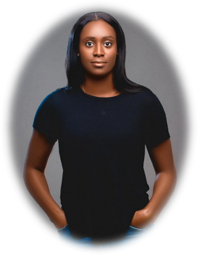

|  | Sophia Omo-OjugoProduct Management ||Fintech|| A highly motivated self-starter, I have built competency in operations management, sales, and business relations. I am a graduate from Monash University with a double-major degree in Media and Communication Studies, and a Fintech MSc from the University of Surrey in progress. |
2013/03 - 2014/10 Monash Foundation Diploma – Monash University
2015/02 - 2018/05 Bachelor of Social Science - Media and Communications Studies & International Relations ||Cum Laude|| Monash University
2022/09 - 2023/09 MSc Fintech and Policy - University of Surrey
| Core Competencies | Languages | ||||||||||||||||||||
|---|---|---|---|---|---|---|---|---|---|---|---|---|---|---|---|---|---|---|---|---|---|
|
|
sophia.ojugo@gmail.com
+447733685888